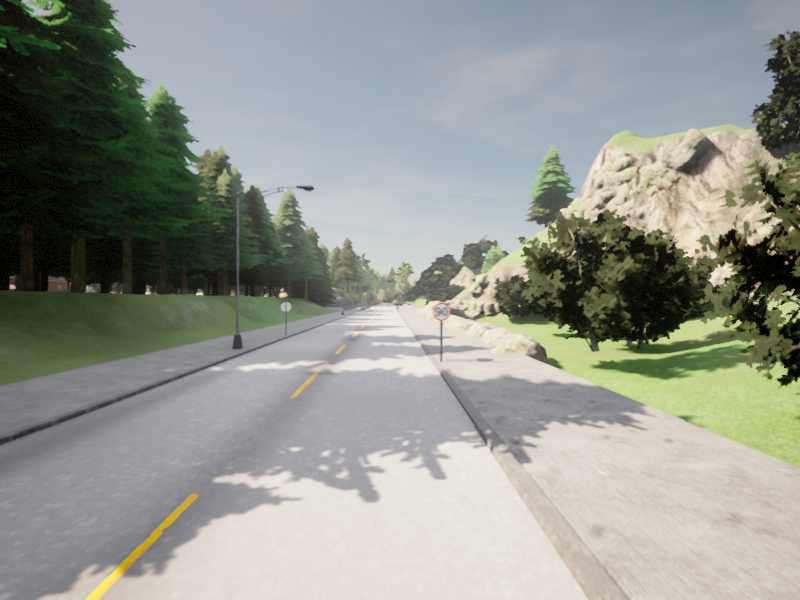
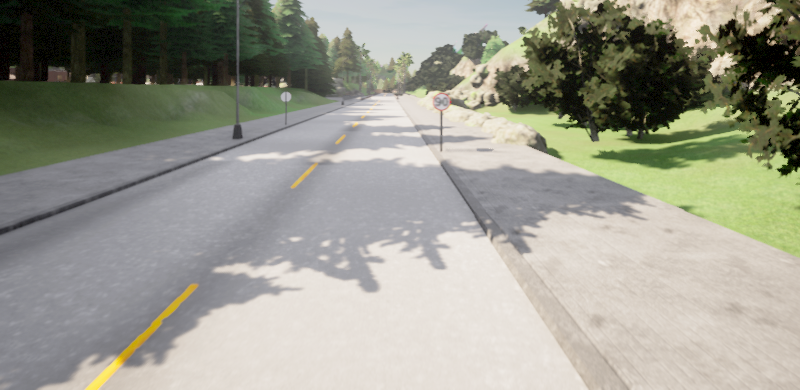

Exploring New Approaches: Horizontal Crop Augmentation & Comparative Evaluation of Balancing Strategies
May 8, 2026
Following the oversampling success of Week 30, this week we replicate and extend the work of Jorge Rodríguez (semana10) to compare cropping-based data augmentation against different balancing methods. The key finding: simple top cropping (35% of the image) drastically reduces oscillations and lane departures, outperforming oversampling in terms of driving smoothness while achieving similar lane‑keeping quality.
0. Motivation & Replication Goal
🧪 Replication study: Jorge Rodríguez previously trained an end‑to‑end steering model using a dataset collected on Town 01/07 with a specific split (25‑30% per turn, 10‑15% recoveries, 55‑65% straight). He applied image cropping (remove top 35%) and reported reduced oscillations. We re‑implemented his pipeline to:
- Compare the effectiveness of cropping vs. our previous oversampling strategy (Week 30, Dataset 5).
- Evaluate whether cropping alone eliminates the center lane bias without explicit recovery samples.
- Understand the interplay between spatial attention (cropping) and dataset balancing.
All experiments use the corrected DAgger stabilisation (1.5 s delay) and the same PilotNet architecture on CARLA 0.9.15.
1. Dataset Composition (Jorge Rodríguez split)
The dataset used this week follows the exact proportions described in the reference blog:
- 🔄 25‑30% for each turn (left/right)
- 🛞 10‑15% for recovery manoeuvres (from lane divider back to lane centre)
- ➡️ 55‑65% for straight driving
Total size: ~55,000 images collected from Town 01 and Town 07 (rural, highways and simple curves). No horizontal shift augmentation was applied – only cropping of the upper 35% of the image (removing sky, distant trees) as shown in Figures 1 and 2.

Figure 1: Original image from dataset (full view with sky and horizon)

Figure 2: Same image after cropping top 35% – network now focuses only on road surface and near‑field lane markings.
Cropping forces the network to rely on low‑level road geometry rather than high‑level contextual cues, which is hypothesised to reduce overfitting to background scenery.
2. Experimental Protocol – Four Training Configurations
We trained the same PilotNet model under four distinct conditions, keeping all hyperparameters identical (learning rate 1e-4, batch size 64, 20 epochs). Evaluations were performed on unseen segments of Town 01 and Town 07 (1 minute each, repeated 3 times). Metrics: right‑lane adherence (binary), oscillation magnitude (subjective scale), lane departures per minute.
| Experiment ID | Data Augmentation | Balancing | Evaluation Town |
|---|---|---|---|
| Exp A | None | None (raw distribution) | Town 01 |
| Exp B | None | None (raw distribution) | Town 07 |
| Exp C | None | Oversampling (minority steering classes) | Town 01 |
| Exp D | Top 35% cropping | None | Town 01 |
Note: Exp A, B, C, D correspond directly to the four video results reported in the PDF.
3. Results & Qualitative Analysis
The following table summarises the observed behaviour from the evaluation videos:
| Experiment | Right‑lane following? | Oscillations | Lane departures (per minute) | Video link |
|---|---|---|---|---|
| Exp A: No augmentation, no balancing – Town 01 | ✅ OK | Many, soft | 2 (mainly right‑side departures) | https://youtu.be/UAe1Q4nIS_Y |
| Exp B: No augmentation, no balancing – Town 07 | ✅ OK | Few, soft | Several (both left and right) | https://youtu.be/SNvTLVY62lY |
| Exp C: No augmentation, but oversampling – Town 01 | ❌ No (frequent centre drifting) | Many, soft | Both left and right (frequent) | https://youtu.be/a--w1KI677Y |
| Exp D: Top 35% cropping – Town 01 | ✅ Yes (solid) | Very low, smooth | ~1 departure per minute | https://youtu.be/9k9oEe_qrqA |
🔍 Key observations:
- Exp A (baseline Town 01): The model follows the right lane but oscillates constantly, likely due to the imbalanced dataset (high proportion of straight steering). Two departures per minute – mainly to the right because the network overcorrects when approaching the left lane divider.
- Exp B (Town 07): Fewer oscillations but still multiple lane departures on both sides. Town 07’s wider lanes and different markings reduce the effectiveness of the raw dataset.
- Exp C (oversampling only): Surprisingly, oversampling worsened right‑lane adherence. The model began oscillating more aggressively and frequently left the lane on both sides. This contradicts Week 30’s results (where oversampling on a different dataset improved performance). The difference is likely due to the absence of recovery samples in this dataset – oversampling without explicit corrective demonstrations amplifies noisy steering commands.
- Exp D (cropping only): Clear winner: very low oscillations, smooth steering, and only one departure per minute. Cropping removes irrelevant visual distractions (sky, trees) and forces the network to focus on lane geometry, effectively mimicking an implicit “attention” mechanism. This single augmentation outperforms both the baseline and oversampling in terms of driving quality.
Conclusion: For the dataset split used by Jorge Rodríguez (with inherent balance of turns/recoveries), top cropping is more effective than oversampling at reducing oscillations and preventing lane excursions. Oversampling without proper recovery samples can even degrade performance. Therefore, for Week 32 we will combine cropping with the best oversampled + recovery dataset from Week 30.
4. Why Does Cropping Outperform Oversampling in This Setup?
🧠 Interpretation: The network trained with raw data (Exp A) sees the horizon and sky, which are largely invariant to steering. These features can act as confounding variables – the model may learn to rely on them instead of the road curvature. When cropping removes the top 35%, the network is forced to extract features from the lower part of the image where lane markings and road geometry dominate. This inductive bias leads to:
- Reduced variance in the steering output → fewer oscillations.
- Better generalisation to unseen curves because the network cannot “cheat” using background features.
On the other hand, oversampling (Exp C) without additional recovery examples merely repeats existing steering commands from the straight‑dominated dataset, causing the model to become overconfident and produce erratic corrections.
These findings align with the PilotNet literature: Bojarski et al. (2016) [2] observed that cropping the top half of the image significantly improves performance in low‑speed urban scenarios.
5. Next Steps – Hybrid Augmentation Pipeline (Week 32)
🚀 Proposed integration: Based on Week 30 and Week 31 results, the optimal configuration appears to be:
- Dataset: Use the oversampled Dataset 5 from Week 30 (which includes 2,991 recovery samples from the lane divider).
- Preprocessing: Apply top 35% cropping to every image.
- Augmentation: Add horizontal shift (PilotNet 2020) with three magnitudes (0.002, 0.003, 0.004) to further improve generalisation.
- Train on Town 01 + Town 07 mixture and evaluate on complex Town 12 with 90° turns and intersections.
We expect this hybrid to achieve near‑zero lane departures and minimal oscillations, finally eliminating the centre lane bias completely.
All code and datasets will be published on Huggingface after validation. We will also measure the time spent outside the right lane as a quantitative metric (instead of counting departures).
6. References & Team Notes
- [1] Rodríguez, J. (2025): Semana 10 – Data augmentation with cropping. https://roboticslaburjc.github.io/2025-tfg-jorge-rodriguez/semana10/
- [2] Bojarski, M., et al. (2016): End to end learning for self‑driving cars (PilotNet). arXiv:1604.07316
- [3] Ross, S., et al. (2011): DAgger: A reduction of imitation learning to no‑regret online learning. AISTATS 2011
Special thanks to Jorge Rodríguez for sharing his dataset pipeline and to the Robotics Lab team for continuous feedback. The replication study confirms that simple spatial cropping can be more impactful than complex balancing strategies when the base dataset is already reasonably structured.
— Armando Mateus, Robotics Lab URJC
📌 WEEK 31 SUMMARY – MAY 8, 2026
📊 Replicated Jorge Rodríguez’s work using a dataset with 25‑30% turns, 10‑15% recoveries, 55‑65% straight driving.
✂️ Top 35% image cropping drastically reduced oscillations (very low, smooth) and achieved only 1 lane departure per minute on Town 01.
⚠️ Oversampling without recovery samples degraded right‑lane adherence (frequent departures both sides).
🔜 Week 32: Combine cropping + oversampled recovery dataset (Week 30) + horizontal shift augmentation for the definitive solution.